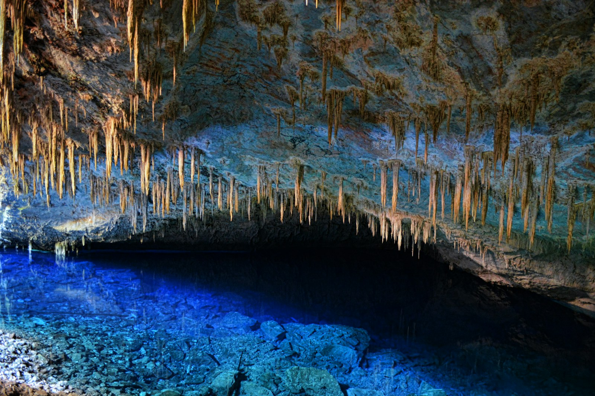
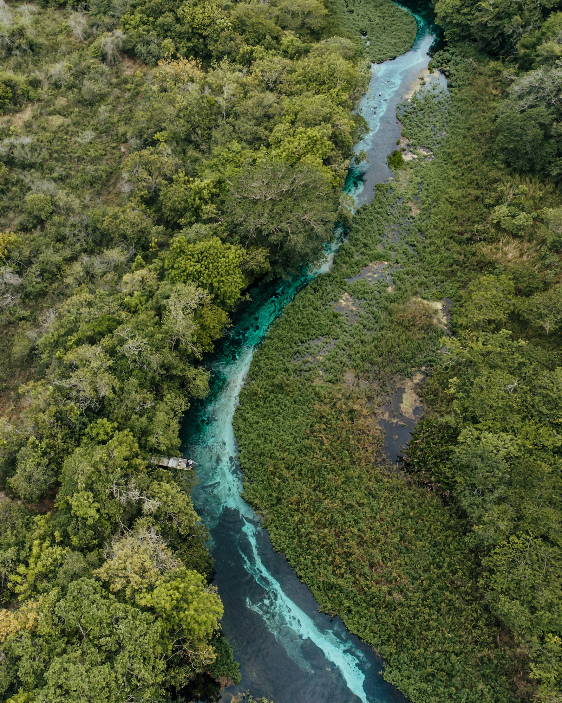
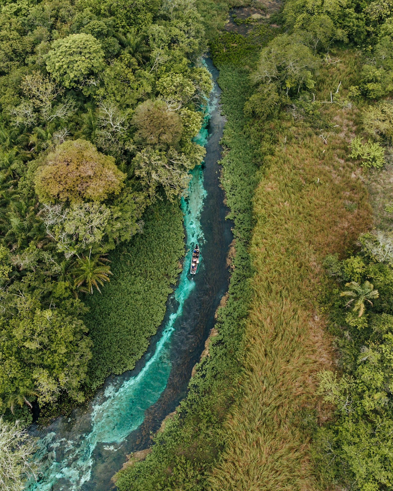
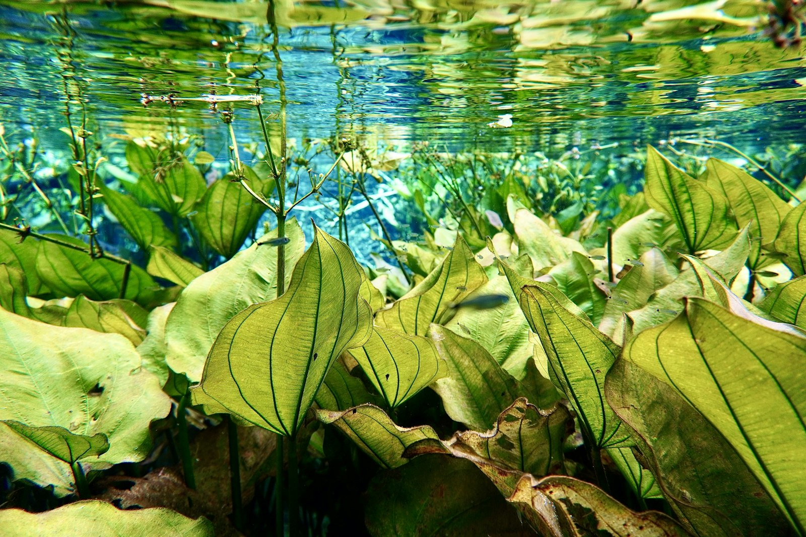

ÁGUAS CRISTALINAS
Bonito
Grutas, rios transparentes e encontros com a natureza em Mato Grosso do Sul.
Conhecer esta experiência →
A EXPERIÊNCIA
Um mergulho nas paisagens de Bonito.
Em Bonito, a viagem pode reunir águas cristalinas, trilhas e cavernas. A Rud Viagens ajuda a escolher os passeios conforme seus interesses e o tempo disponível.
Atividades sugeridas
Contemplação na Gruta do Lago Azul e flutuação no Rio Sucuri estão entre as opções para conhecer a região. A escolha dos atrativos depende de disponibilidade e das condições de cada passeio.
O que pode estar incluído
- Planejamento dos passeios e deslocamentos
- Hospedagem e transporte conforme a proposta
- Ingressos, guias e equipamentos quando contratados
- Suporte da Rud Viagens antes da viagem
O que não está incluído
- Serviços não indicados na proposta contratada
- Despesas pessoais
Datas, duração, valores e serviços são definidos na proposta. Confirme vagas, regras de visitação e preparo necessário antes da reserva.
Como funciona
Conte seu período, perfil, preferências e orçamento pelo WhatsApp. A Rud Viagens organiza uma proposta com roteiro, serviços e condições. O planejamento está incluído na contratação.
Quando acontece
As datas e a duração são combinadas conforme sua disponibilidade e as vagas nos atrativos. Os passeios apresentados são sugestões para o planejamento.
Informações importantes
A Gruta do Lago Azul é um passeio de contemplação; a flutuação ocorre em outros atrativos. Antes da reserva, confirme inclusões, deslocamentos e exigências de cada atividade.
Quer conhecer Bonito?
Falar com a Rud Viagens no WhatsApp →FOTOS DO DESTINO
Bonito em imagens


